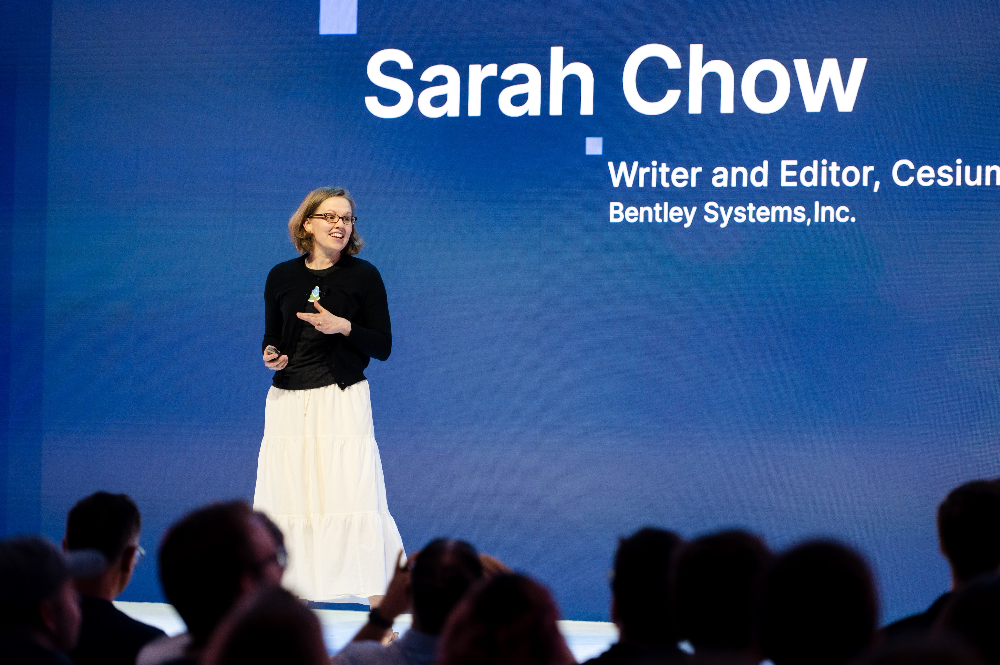

Since 2015, I've served as communications editor for Cesium, the open-source platform for 3D geospatial data.
I'm passionate about supporting the Cesium community, and I write user stories, company news, and event coverage for the Cesium blog, in addition to reviewing and supporting technical communications. I've even gotten to present at industry conferences. I have well over a hundred bylined pieces on the Cesium blog, in addition to material across the site. To read samples of my writing, browse the Cesium user stories.
Explore the Cesium Blog